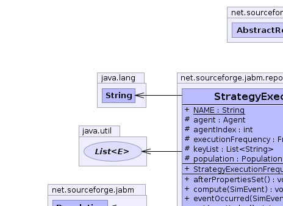
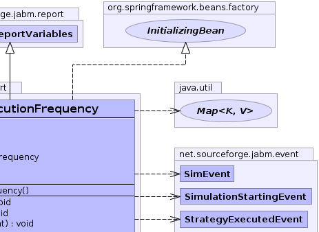
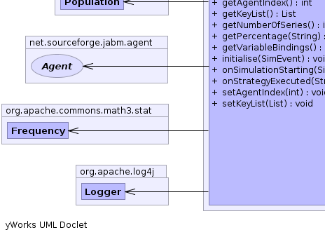
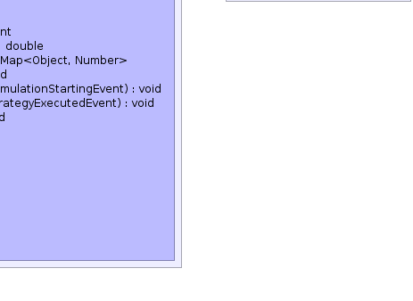

net.sourceforge.jabm.event.AbstractModel
net.sourceforge.jabm.report.AbstractReportVariables
net.sourceforge.jabm.report.StrategyExecutionFrequency
net.sourceforge.jabm.event.AbstractModel
net.sourceforge.jabm.report.AbstractReportVariables
net.sourceforge.jabm.report.StrategyExecutionFrequency
|
|||||||||
| PREV CLASS NEXT CLASS | FRAMES NO FRAMES | ||||||||
| SUMMARY: NESTED | FIELD | CONSTR | METHOD | DETAIL: FIELD | CONSTR | METHOD | ||||||||
java.lang.Object
public class StrategyExecutionFrequency
This class collects data on the frequency with which each strategy is executed.
Strategy,
Serialized Form|  |  |
|  |  |
| Field Summary | |
|---|---|
protected Agent |
agent
If agent is non-null then only track strategies executed by the specified agent. |
protected int |
agentIndex
|
protected org.apache.commons.math3.stat.Frequency |
executionFrequency
|
protected java.util.List<java.lang.String> |
keyList
|
static java.lang.String |
NAME
|
protected Population |
population
|
| Fields inherited from class net.sourceforge.jabm.report.AbstractReportVariables |
|---|
name, simulation, timeStamp, xVariableName, yVariableNames |
| Fields inherited from class net.sourceforge.jabm.event.AbstractModel |
|---|
deleteQueue, genericListeners, specificListeners |
| Constructor Summary | |
|---|---|
StrategyExecutionFrequency()
|
|
| Method Summary | |
|---|---|
void |
afterPropertiesSet()
|
void |
compute(SimEvent event)
Update variables. |
void |
eventOccurred(SimEvent event)
|
int |
getAgentIndex()
|
java.util.List |
getKeyList()
|
int |
getNumberOfSeries()
|
double |
getPercentage(java.lang.String tag)
|
java.util.Map<java.lang.Object,java.lang.Number> |
getVariableBindings()
Get the values calculated by this report. |
void |
initialise(SimEvent event)
Initialise the variables in response to event. |
void |
onSimulationStarting(SimulationStartingEvent event)
|
void |
onStrategyExecuted(StrategyExecutedEvent event)
|
void |
setAgentIndex(int agentIndex)
The index of a particular agent within the population whose strategy executions we want to track. |
void |
setKeyList(java.util.List keySetObjects)
Configure the list of the strategies which this report will track. |
| Methods inherited from class net.sourceforge.jabm.report.AbstractReportVariables |
|---|
createVariable, dispose, getName, getTimeStamp, getX, getxVariableName, getY, getyVariableNames, recordMoments, recordSummaryStatistics, setName, tag |
| Methods inherited from class net.sourceforge.jabm.event.AbstractModel |
|---|
addListener, addListener, clearListeners, clone, fireEvent, notifyGenericListeners, notifySpecificListeners, processDeleteQueue, removeListener |
| Methods inherited from class java.lang.Object |
|---|
equals, finalize, getClass, hashCode, notify, notifyAll, toString, wait, wait, wait |
| Field Detail |
|---|
protected org.apache.commons.math3.stat.Frequency executionFrequency
protected java.util.List<java.lang.String> keyList
protected Agent agent
protected Population population
protected int agentIndex
public static final java.lang.String NAME
| Constructor Detail |
|---|
public StrategyExecutionFrequency()
| Method Detail |
|---|
public java.util.Map<java.lang.Object,java.lang.Number> getVariableBindings()
Report
getVariableBindings in interface ReportgetVariableBindings in class AbstractReportVariablesMap of user-readable variable names to their
associated values.public double getPercentage(java.lang.String tag)
public void eventOccurred(SimEvent event)
eventOccurred in interface EventListenereventOccurred in class AbstractReportVariablespublic void onSimulationStarting(SimulationStartingEvent event)
public void onStrategyExecuted(StrategyExecutedEvent event)
public void initialise(SimEvent event)
ReportVariables
initialise in interface ReportVariablesinitialise in class AbstractReportVariablespublic void compute(SimEvent event)
ReportVariables
compute in interface ReportVariablescompute in class AbstractReportVariablespublic java.util.List getKeyList()
public void setKeyList(java.util.List keySetObjects)
keySetObjects - The list of strategies which will be tracked. These can be
object factories, object instances, or strings denoting the
tag of a strategy.public int getAgentIndex()
public void setAgentIndex(int agentIndex)
agentIndex - public int getNumberOfSeries()
getNumberOfSeries in interface XYReportVariablesgetNumberOfSeries in class AbstractReportVariables
public void afterPropertiesSet()
throws java.lang.Exception
afterPropertiesSet in interface org.springframework.beans.factory.InitializingBeanjava.lang.Exception
|
|||||||||
| PREV CLASS NEXT CLASS | FRAMES NO FRAMES | ||||||||
| SUMMARY: NESTED | FIELD | CONSTR | METHOD | DETAIL: FIELD | CONSTR | METHOD | ||||||||